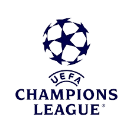

Ce este UEFA Champions League?
UEFA Champions League este cea mai importantă competiție inter-cluburi din Europa. Fondată în 1955, atrage cele mai bune echipe din fiecare campionat național.
Formatul competiției
Competiția începe cu faze preliminare, urmate de faza grupelor (32 de echipe împărțite în 8 grupe). Primele două echipe din fiecare grupă merg în faza eliminatorie (optimi, sferturi, semifinale și finala).

Cluburi legendare
- Real Madrid – 15 trofee
- AC Milan – 7 trofee
- Liverpool – 6 trofee
- Bayern Munchen – 6 trofee
- FC Barcelona – 5 trofee
Jucători legendari în UCL
Printre cei mai mari jucători care au făcut istorie în Champions League se numără:
- Cristiano Ronaldo – golgheterul all-time
- Lionel Messi – recorduri incredibile și magie pe teren
- Zinedine Zidane, Paolo Maldini, Xavi, Iniesta, Raul, și mulți alții


Știați că...?
- Finala din 2005 (Liverpool - Milan) este considerată cea mai spectaculoasă din istorie.
- Real Madrid a câștigat primele 5 ediții ale competiției (1956–1960).
- Haaland a marcat 5 goluri într-un singur meci de UCL în 2023.